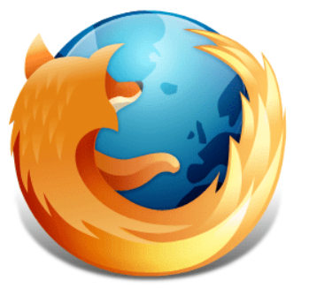

At Mozilla, we're a global community of
沿着条路走到头
右转
直行穿过第一个十字路口
在第三个十字路口处左转
继续走 300 米，学校就在你的右手边
working together…
Mozilla
20 January 2016
January 2016
20 January
19:30
19:30:01.856
7.30pm, 20 January 2016
7.30pm, 20 January 2016 is 8.30pm in France
The fourth week of 2016
到达连接